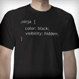

NINJA-IDE Is Not Just Another IDE
NINJA-IDE is a cross-platform integrated development environment (IDE). NINJA-IDE runs on Linux/X11, Mac OS X and Windows desktop operating systems, and allows developers to create applications for several purposes using all the tools and utilities of NINJA-IDE, making the task of writing software easier and more enjoyable.
Features
-
Powerfull Code Editor

NINJA-IDE provides a complete code editor with highlighting for several languages, code completion, code assistant for: imports, navigation, etc. Also it is possible to extend the editor functionality using plugins.
Learn More -
Display Manager

Provides support to use an embedded Python Console into the IDE, and load several plugin's widgets for multi-purposes.
Learn More -
Project Managment

NINJA-IDE allows to manage Python Project automatically, saving descriptive information about them and letting the user to perform file managment related task in the IDE itself.
Learn More -
Run Project and Files

With NINJA-IDE it is possible to run Python Project or any file opened in the Editor with just one click. It is also possible to render an HTML file loaded in the Editor in the IDE to see how the changes would look like in a browser.
Learn More -
Highly extensible

You can create a Plugin for several purposes and it can be integrated completely with the IDE, increasing the functionality available to improve assistance for projects development.
Learn More
Downloads
Here, litle dan, you will find any version you need to be able to punch and kick like a real ninja programmer. We won't be guilty if you hurt yourself doing some ninja stuff.
Below each SO, the list is formatted as:
| SO Version | Last Ninja Version for it | Download Link |
Windows
| Windows 98, XP | Ninja IDE v1.0 | Download |
| Windows 7 | Ninja IDE v2.0 | Download |
Linux
| Debian 11.01 | Ninja IDE v1.8 | Download |
| Ubuntu 11.04 | Ninja IDE v2.0 | Download |
Mac OsX
| Leopard 10.5 | Ninja IDE v1.8 | Download |
| Leoopard 10.6 | Ninja IDE v2.0 | Download |
About us
This is the ninja team that worked in Ninja IDE. Don't judge their faces, they can beat you up with a pendrive if they want to.
-

Diego Sarmentero
Software Freedom Lover, enjoy programming in several languages, and share all the things I've learn with the community. Computer Geek by nature.
diego.sarmentero@ninja-ide.org -

Matías Herranz
Django/Python, web and mobile(iPhone) apps programmer. I like guitar playing, bonsais, hang around with friends and cherry flavored jelly.
matias@ninja-ide.org -

Martín Alderete
Software developer, open source software fan. I really like to programming in different languages. I met Python in 2005 and I felt in love, since then it is my main language. I also like practicing martial arts and sports.
malderete@ninja-ide.org -
Santiago Moreno
Perfectionist person and programmer, not always a good combination. I am not satisfied just to make things work well, also have to look pretty.
cs.moreno@ninja-ide.org -
Pedro Mourelle
Something similar.
pedro@ninja-ide.org
Plugins
Navigate through the titles and grub the sweetest plugins you can find. Don't forget to qualify the plugin after you test it, remember we are ninja and know how to find you.